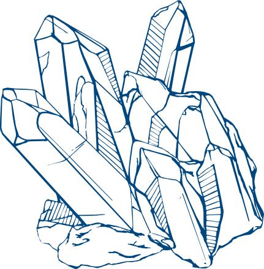

Гомеопатия
Гомеопатией регулярно лечатся три сотрудницы Woman.ru. А вы, кстати, знали, что это вообще не травки? О, сколько же открытий приготовили нам наши аптечки!
Итак, что же это такое?
Гомеопатию часто путают с фитотерапией, хотя на самом деле это препараты, работающие по совершенно другому принципу. Классические гомеопатические препараты могут содержать компоненты с высоким разведением веществ (настолько сильно, что это, скорее, информация о веществе, чем само вещество), а могут быть и более концентрированными. В зависимости от этого они могут либо лечить симптомы болезни, либо вызывать у здоровых людей симптомы, подобные симптомам заболевания (лечить подобное подобным). Кроме растений в качестве сырья для гомеопатического препарата могут использоваться минералы, продукты животного происхождения и некоторые синтетические вещества.

Кто придумал?
Немецкий медик Самуэль Ганеман. В 1776 году во время проведения экспериментов на себе Ганеман заметил, что после приема хинина у него возникают симптомы, похожие на симптомы больных малярией. После проведения еще ряда подобных тестов был выведен главный принцип гомеопатии – подобное лечится подобным.
А что там с эффективностью?
Хотя в России для гомеопатических лекарств (то есть препаратов, которые продаются в обычных аптеках с надписью «гомеопатическое лекарство») процедура государственной регистрации подобна той, которую проходят все остальные лекарственные средства (хотя она и упрощенная), вопросов к этой области достаточно много. Главная проблема – одновременное сосуществование сразу нескольких школ гомеопатии (есть классическая школа, использующая сильно разведенные препараты зачастую без доказательной базы; есть более современная школа, принципы которой близки к аллопатическим, и ее препаратами можно лечить многие заболевания). Главная сложность – найти квалифицированного специалиста, который мог бы грамотно назначить гомеопатический препарат и корректировать при необходимости ход лечения. При выборе препарата обращайте внимание на проверенные компании, которые хорошо зарекомендовали себя как производители других видов лекарств – это поможет избежать приобретения малоэффективного средства, созданного без доказательной базы.